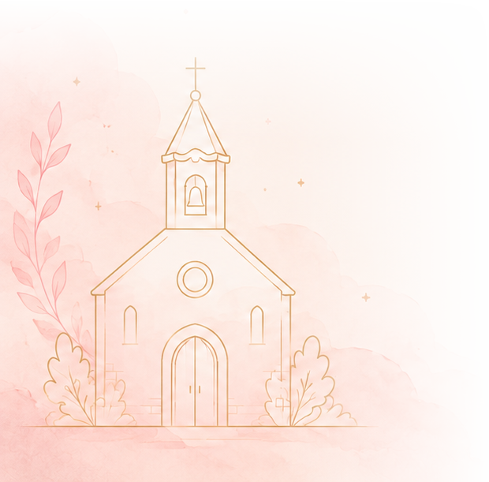
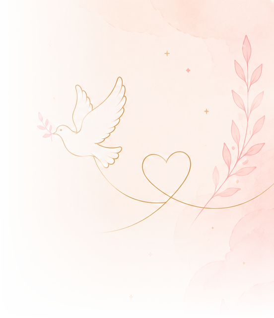

Los recuerdos del bautizo de
Un día vivido con mucho amor, guardado para siempre
Desliza para revivir el día ↓
Un día inolvidable
Ainhoa
Preparando tus recuerdos…
No hemos podido cargar las fotografías.
Comprueba tu conexión e inténtalo de nuevo en unos segundos.